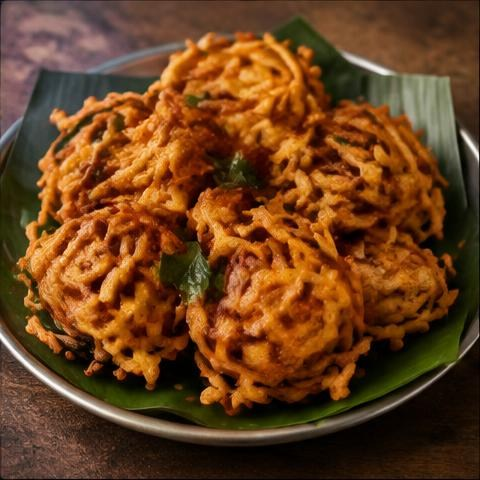
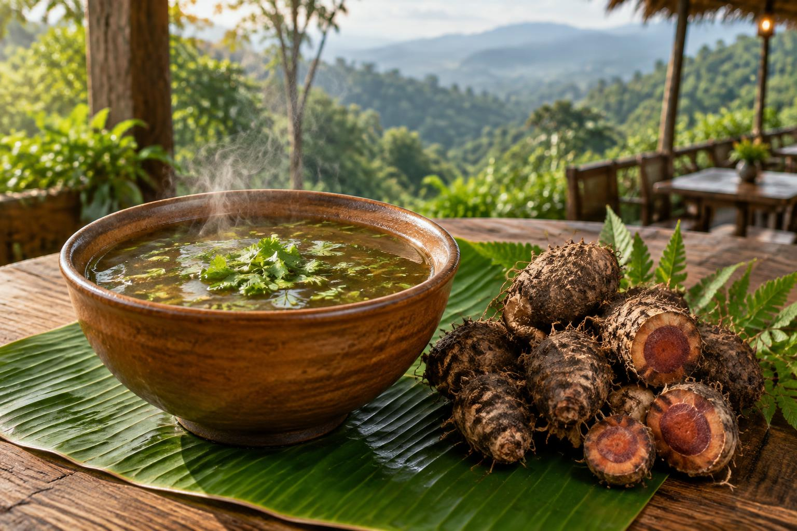

FAN FAVOURITEOnion Bajji
Golden, crispy onion fritters.
Ask for Price
Freshly prepared snacks, comforting chai and coffee, and our special Mudavattu Kilangu Soup — made for every hill-station moment.

A LOCAL INGREDIENT. A WARM TRADITION.A traditional-style warm soup prepared with Mudavattu Kilangu, created especially for those looking for a comforting and wholesome hill-station food experience.
Nestled in the beautiful hills of Yercaud, MP Snacks & Bites brings together hot, comforting snacks and beverages that are perfect for cool hill-station evenings.
A pause from the everyday. A plate of something delicious. A moment worth sharing.
Come find your happy placeNothing feels better than a hot cup of chai with a crispy snack in the cool Yercaud weather.
Order Chai & Snacks Some things just belong together.Our special local ingredient, ready for your kitchen.
Bring home a unique taste of the hills.
Group and family orders are available for a minimum of 10 members.
Minimum Group Size: 10 MembersHot snacks prepared fresh for every order.
Enjoy your favourite snacks surrounded by the beauty of the hills.
Perfect combinations for cool Yercaud weather.
Discover our unique Mudavattu Kilangu Soup.
Sample reviews — awaiting your real customer stories
“Perfect snack stop after exploring Yercaud!”
“Hot bajji and chai in the cold weather — amazing combination.”
“The Mudavattu Kilangu Soup was a unique experience.”